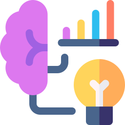
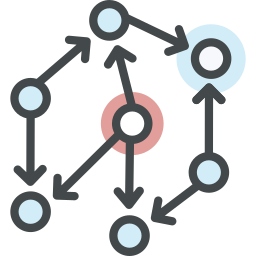
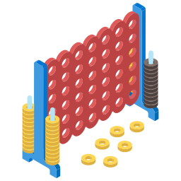

Python
Python fundamentals, data structures, functions, files, debugging
Make a simple Python game
Classical Machine Learning
Data exploration, regression, classification, validation

DataFrames, indexing, grouping, missing values, data manipulation
Pipelines, categorical variables, cross-validation, XGBoost, data leakage

Kaggle Home Prices prediction
Deep Learning
Arrays, dimensions, shapes, indexing, slicing, vectorization
Neural networks, gradient descent, backpropagation
Tensors, DataLoaders, models, optimization, training loops
Build a handwritten digit recognizer
NLP & LLMs
Transformers, attention, GPTs
GPT architecture, transformers, training a language model

RAG, local models, AI agents
Agents, workflows, stateful AI systems

Fine-tuning, LoRA, parameter-efficient adaptation
Build a knowledge assistant
Computer Vision
CNNs, convolution, pooling, augmentation
OpenCV, detection, OCR, segmentation, video processing
Build a vision-controlled game
Generative AI
CLIP, embeddings, diffusion, DDPM, DDIM, conditioning, guidance
Reinforcement Learning
Game agents, lookahead, search, reinforcement learning, deep RL
